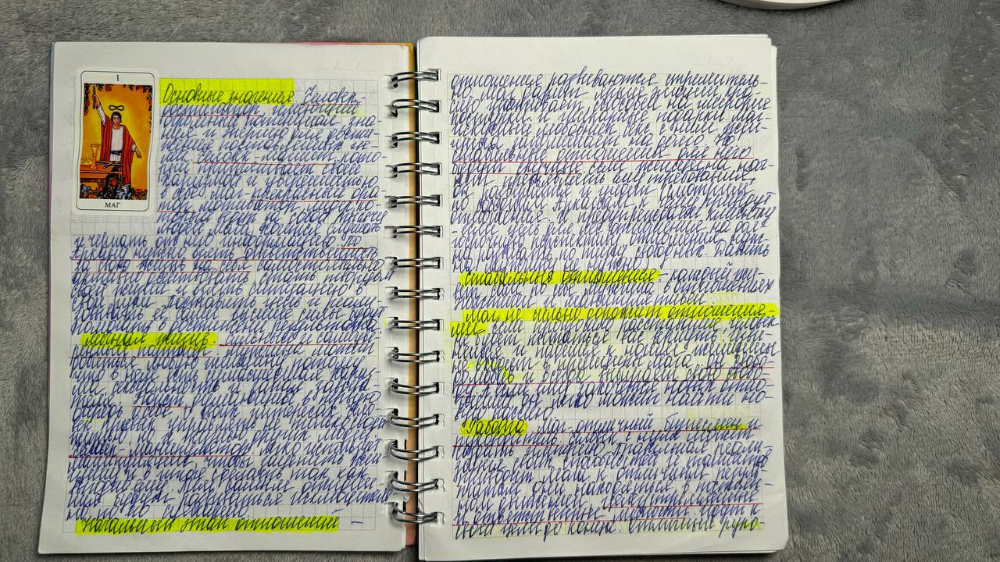
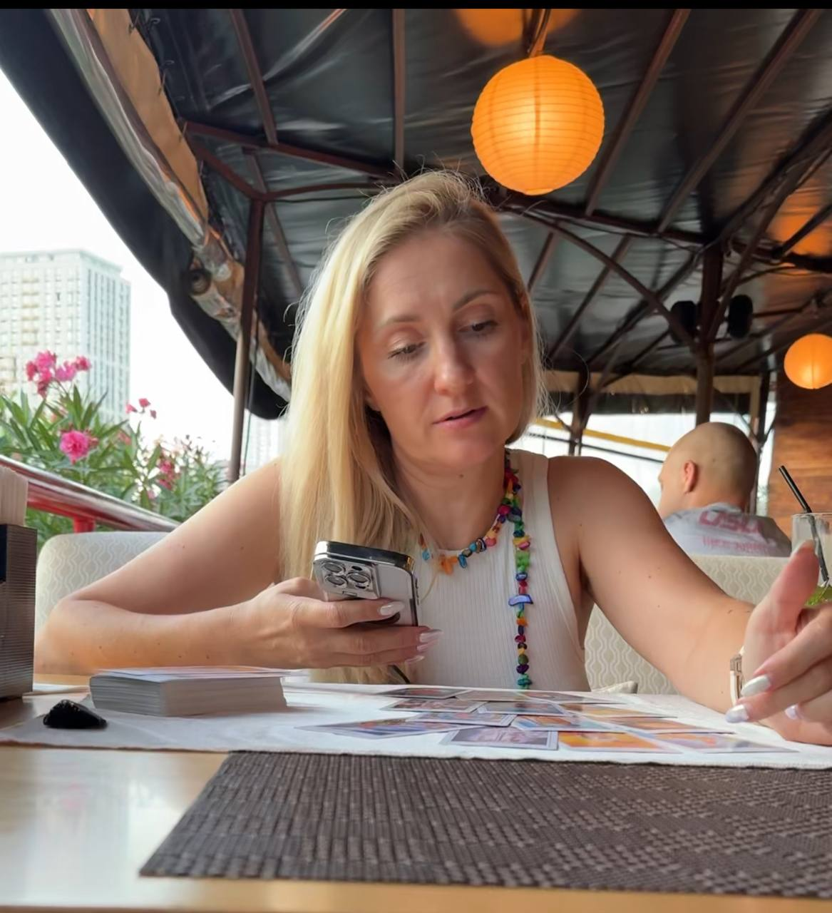

-

Тільки починаєш вивчати Таро. Є бажання, але книги і відео з соц.мереж тебе більше заплутують, ніж дають відповіді.
-

Пройшла декілька курсів, але фігурні карти у розкладах викликають більше запитань, ніж відповідей.
-

Вже працюєш з людьми, але періодично отримуєш відповіді від клієнтів, що розклад не програвся.
-

Потребуєш підтримки і зворотнього зв’язку від наставника.